Fmoc 固相多肽合成 (SPPS)
第二章：基本原理 (Basic Principles)
原著：W. C. Chan & Peter D. White Fmoc Solid Phase Peptide Synthesis: A Practical Approach (Oxford University Press)
作者：Peter D. White & Weng C. Chan | 书页范围：pp. 9–40
固相多肽合成 (Solid Phase Peptide Synthesis, SPPS) 的核心思想由 R. Bruce Merrifield 于 1963 年提出。其基本策略是：将目标肽链的 C 端氨基酸通过其羧基共价连接到一种不溶性固相载体 (insoluble solid support) 上，然后在固相上依次延伸肽链。每一步偶联反应完成后，过量的可溶性试剂和副产物只需通过简单的过滤和洗涤即可去除，无需对中间体肽进行纯化。
这种方法具有几个显而易见的优势：
分离简便：中间体肽与可溶性试剂和溶剂的分离仅需过滤 (filtration) 和洗涤 (washing)，无需柱层析。
可自动化：由于每一步操作的重复性高 (脱保护→洗涤→偶联→洗涤)，许多操作可以自动化完成。
过量试剂推动反应完全：可以使用大幅过量的试剂 (通常 2–10 当量) 来推动反应趋于完成，因为多余的试剂在反应后被洗掉。
物理损失最小化：肽链始终共价连接在载体上，在反复洗涤和转移过程中的物理损失被最小化。
尽管 SPPS 是一种极为强大的技术，但它也有固有的局限性。最重要的问题是：不完全反应 (incomplete reactions)、副反应 (side reactions) 或不纯试剂 (impure reagents) 产生的副产物会在树脂上不断积累。因为中间体无法纯化，这些副产物会随着肽链的延伸而被"锁定"在产物中。
Table 1 戏剧性地展示了每步化学反应效率低于 100% 时对最终产物纯度的累积效应。以合成一个 20 肽 (decapeptide → 实际为 20 肽即 eicosapeptide，需 19 步偶联) 为例：
■ Table 1 累积误差对最终产物收率的影响
| 每步收率 | 偶联步数 (10 肽) | 偶联步数 (20 肽) | 偶联步数 (50 肽) |
|---|---|---|---|
| 99% | 91% | 83% | 61% |
| 95% | 63% | 36% | 8% |
| 90% | 39% | 12% | 0.5% |
从表中可以看出，即使每步反应达到 99% 的收率，合成 50 肽时的总收率也仅有约 61%。如果每步收率下降到 95%，20 肽的总收率仅为 36%，50 肽几乎无法获得。这意味着在实际合成中，追求每一步接近 100% 的转化率是至关重要的，否则副产物的种类和数量将使最终产物的纯化变得极其困难。
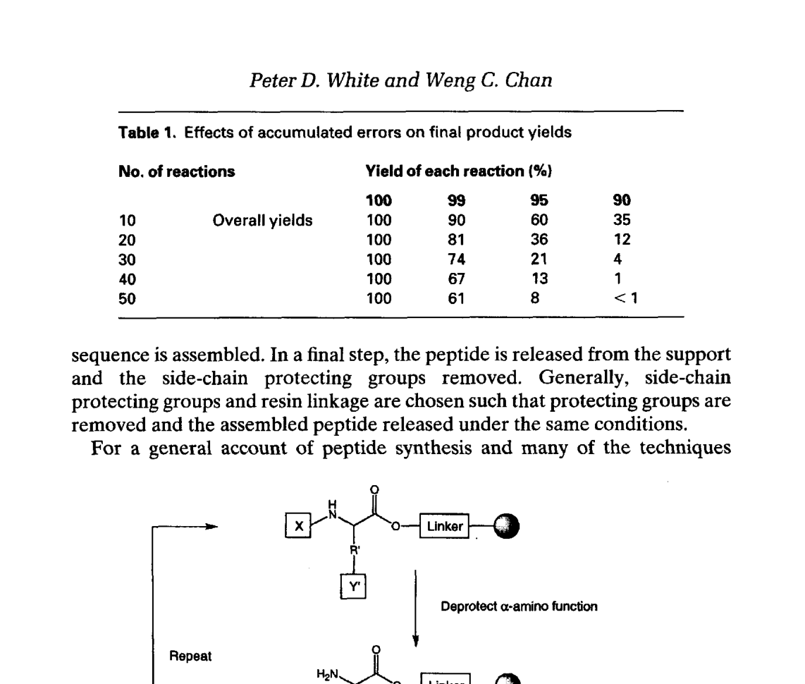
Table 1 & Figure 1 (书页 10)：累积误差对产物收率的影响及 SPPS 原理示意图
Figure 1 展示了固相合成的基本原理。C 端氨基酸 (C-terminal amino acid) 通过其羧基 (-COOH) 连接到不溶性载体上。该氨基酸的侧链官能团 (side-chain functional group) 必须用永久保护基 (permanent protecting group) 掩蔽，以防止在合成过程中发生不必要的反应。α-氨基 (α-amino group) 则用临时保护基 (temporary protecting group) 保护。
一个典型的 SPPS 循环包括以下步骤：
脱保护 (Deprotection)：去除临时 α-氨基保护基，暴露出游离的 α-氨基。
洗涤 (Washing)：用溶剂充分洗涤，去除脱保护试剂和副产物。
偶联 (Coupling)：引入过量的下一个 Nα-保护的氨基酸 (其羧基已被活化)，与树脂上的游离氨基形成新的酰胺键 (peptide bond)。
洗涤 (Washing)：再次洗涤，去除过量的氨基酸和活化试剂。
重复 (Repetition)：重复脱保护→偶联的循环，直到完成目标氨基酸序列。
切割 (Cleavage)：最后一步，用适当的试剂将肽链从固相载体上释放，并同时去除所有侧链保护基。
在溶液相合成中，可以使用 TLC、HPLC、NMR 等分析技术跟踪反应进程。但在固相合成中，肽链始终连接在不溶性载体上，这些常规分析方法通常不适用。因此，固相合成的反应监测主要依赖以下手段：
茚三酮试验 (Kaiser test / Ninhydrin test)：最常用的定性检测方法。用茚三酮试剂检测树脂上残留的游离胺。阳性结果 (蓝色/紫色) 表示存在未反应的胺，即偶联不完全；阴性结果 (淡黄色) 表示偶联完全。
溴酚蓝试验 (Bromophenol blue test)：另一种检测游离胺的颜色试验，对某些 Kaiser test 不灵敏的情况有效。
电导测定法 (Conductimetric monitoring)：在连续流合成中通过监测流出液的电导变化来判断反应进程。
UV 分光光度法：在 Fmoc SPPS 中，可通过监测脱保护流出液在 304 nm 处的吸收来定量 Fmoc 去保护的程度。
Merrifield SPPS，也称为 Boc/Bzl 策略，是最早发展起来的固相多肽合成方法。它使用渐进式酸解 (progressive acidolysis) 来实现临时保护基和永久保护基之间的选择性去除。
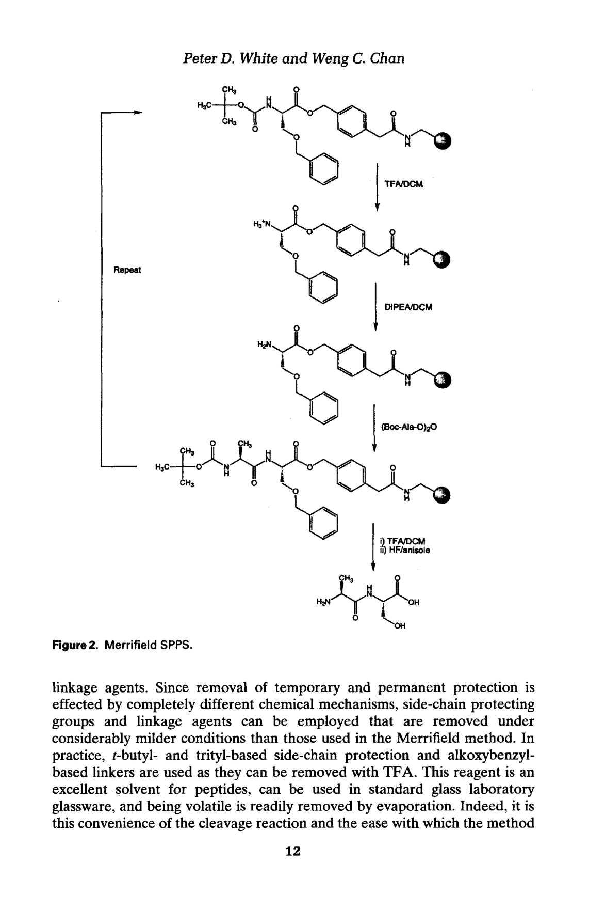
Figure 2 (书页 12)：Merrifield SPPS (Boc/Bzl) 流程图
Merrifield 技术的主要特征如下：
C 端锚定：C 端氨基酸通过苄酯键 (benzyl ester bond) 锚定在 PAM 树脂 (4-(hydroxymethyl)phenylacetamidomethyl polystyrene，羟甲基苯乙酰胺甲基聚苯乙烯) 上。原始的氯甲基聚苯乙烯 (chloromethyl polystyrene) 现已很少使用。
临时 α-氨基保护：使用 Boc (tert-butyloxycarbonyl，叔丁氧羰基) 作为临时 α-氨基保护基。用纯 TFA (trifluoroacetic acid，三氟乙酸) 或 TFA/DCM 去除。
中和：TFA 脱保护后产生的铵盐 (三氟乙酸盐) 需要用 DIPEA/DCM (N,N-diisopropylethylamine / dichloromethane) 中和，或者在偶联过程中原位中和 (in situ neutralization)。
偶联：最初使用 DCC (N,N'-dicyclohexylcarbodiimide) / DCM 进行偶联。现在多使用预制的对称酸酐 (symmetric anhydrides) 或苯并三唑酯 (benzotriazolyl esters)，溶剂改为 DMF (N,N-dimethylformamide) 或 NMP (N-methylpyrrolidone)。
侧链保护基：使用一系列基于苄基 (benzyl-based) 的保护基，通过苯环上供电子或吸电子基团的取代来微调其对酸的稳定性。
最终切割和侧链脱保护：使用无水 HF (anhydrous hydrogen fluoride)。这需要特殊的 PTFE 衬里 (polytetrafluoroethylene-lined) 设备。
原始的氯甲基聚苯乙烯树脂 (Merrifield 树脂) 在长肽合成中存在一个严重问题：肽-苄酯键在反复 TFA 处理 (Boc 脱保护) 过程中对酸的稳定性不足，导致肽链提前从树脂上断裂 (premature cleavage)，产生截短副产物。PAM (phenylacetamidomethyl) 树脂通过在苄基和对苯乙酰胺基之间引入一个亚甲基间隔臂，使得酯键对 TFA 的稳定性提高了约 100 倍，从而显著减少了长肽合成中的肽链丢失问题。
Merrifield 方法经过数十年的发展已经成为极其强大的工具，但它有一个重大的实际局限性：最终切割和侧链脱保护需要使用无水液态 HF。HF 是一种高毒性、高腐蚀性的化学品，需要特殊的 PTFE 衬里设备和严格的安全防护措施。这使得大多数新手实验室对 Merrifield 方法望而却步，也促使了 Fmoc/tBu 方法的广泛采用。
与 Merrifield 方法使用渐进式酸解来实现临时和永久保护基的选择性去除不同，Fmoc/tBu 方法基于正交保护基 (orthogonal protecting groups) 策略：碱敏感的 Nα-Fmoc 基团 + 酸敏感的侧链保护基和树脂连接臂。
"正交" (orthogonal) 的含义是：临时保护基和永久保护基通过完全不同的化学机制去除。Fmoc 基团通过碱 (哌啶, piperidine) 去除，而侧链保护基和树脂连接臂通过酸 (TFA) 去除。由于两种去除机制互不干扰，因此可以确保在去除临时保护基时不会影响永久保护基，反之亦然。
这一策略带来一个重大优势：可以使用比 Merrifield 方法温和得多的条件去除侧链保护基和连接臂。在实践中，使用叔丁基 (tert-butyl, tBu) 和三苯甲基 (trityl, Trt) 类型的侧链保护基，以及烷氧苄基 (alkoxybenzyl) 类型的连接臂，它们都可以被 TFA 去除。TFA 是肽的优良溶剂，可在标准玻璃器皿中使用，挥发性好，易于蒸发去除，与 HF 相比安全性大大提高。
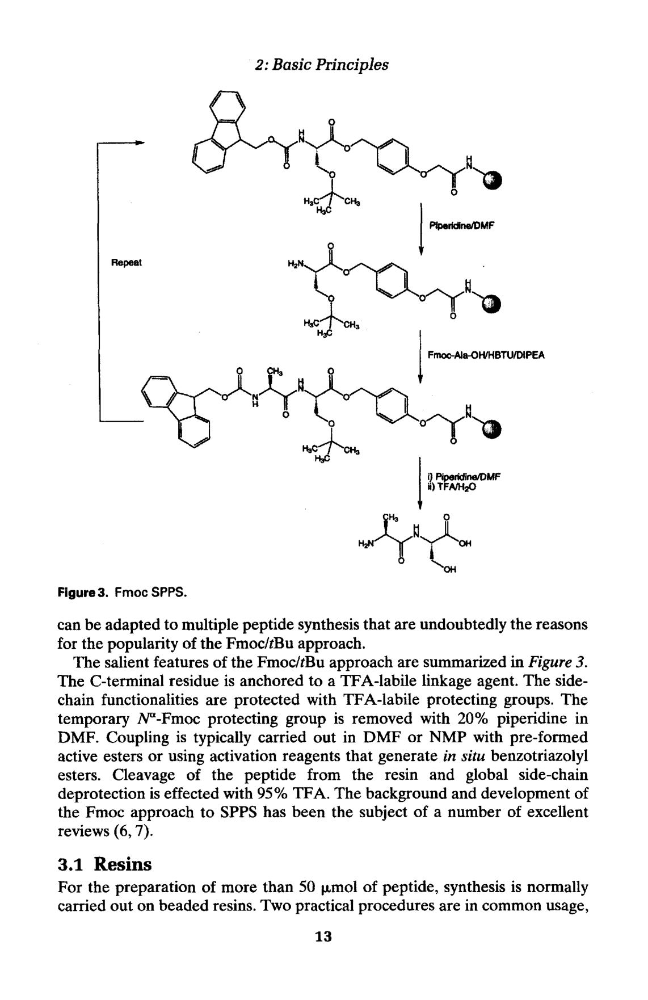
Figure 3 (书页 13)：Fmoc/tBu SPPS 流程图
C 端锚定：C 端残基锚定在 TFA 敏感的连接臂 (linker) 上。
侧链保护：侧链官能团用 TFA 敏感的保护基 (如 tBu, Trt, Pbf, Boc) 保护。
临时 Nα-Fmoc 脱保护：使用 20% 哌啶 (piperidine) / DMF 去除 Fmoc 基团。
偶联：通常在 DMF 或 NMP 中进行，使用预制活性酯 (pre-formed active esters，如 OPfp, ONp) 或原位生成苯并三唑酯 (in situ generated benzotriazolyl esters) 的活化试剂 (如 HBTU, TBTU, PyBOP, HATU)。
最终切割：从树脂切割和全局侧链脱保护 (global side-chain deprotection) 使用 95% TFA。
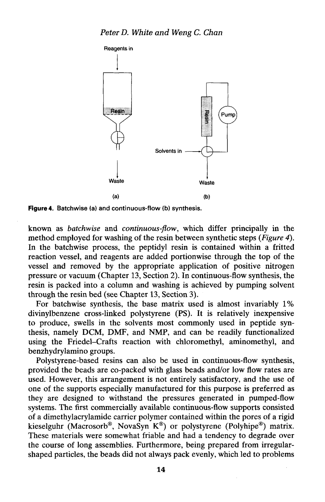
Figure 4 (书页 14)：批式合成 (A) vs 连续流合成 (B) 示意图
Fmoc SPPS 有两种基本的合成操作模式：
■ 批式合成 (Batchwise synthesis)
在批式合成中，肽基树脂 (peptidyl-resin) 置于带有烧结玻璃滤板 (sintered glass frit) 的反应器中。试剂和溶剂分批加入反应器，反应完成后通过氮气压 (nitrogen pressure) 或真空 (vacuum) 将液体排出。这是最常用的合成模式，操作简单，设备要求低。
■ 连续流合成 (Continuous-flow synthesis)
在连续流合成中，树脂装入不锈钢或玻璃柱中，溶剂和试剂通过高压泵 (HPLC-style pump) 持续流过柱子。这种模式需要特殊的耐压树脂载体，但可以实现更精确的反应控制和实时监测。
批式合成中使用的基质几乎都是 1% 二乙烯苯交联聚苯乙烯 (1% divinylbenzene cross-linked polystyrene, PS)。这种树脂的优点是：价格低廉，在 DCM/DMF/NMP 中有良好的溶胀性能 (swelling)，可以通过 Friedel-Crafts 反应进行功能化 (functionalization)。树脂的溶胀特性对合成至关重要——溶胀允许试剂分子进入聚合物内部到达反应位点。
连续流合成需要能够承受高压的载体。常用的有：
TentaGel：PEG 接枝到低交联聚苯乙烯上 (PEG-grafted low cross-linked PS)。球形均一，耐高压。粒径约 90 μm，负载 0.2–0.3 mmol/g。
PEO-PS：聚环氧乙烷-聚苯乙烯共聚物 (polyethylene oxide-polystyrene graft copolymer)。
PEGA：聚乙二醇-二丙烯酰胺共聚物 (polyethylene glycol-dimethyl acrylamide copolymer)。水溶胀性能极好 (13 ml/g)。
CLEAR：交联聚乙二醇 (cross-linked polyethylene glycol)。
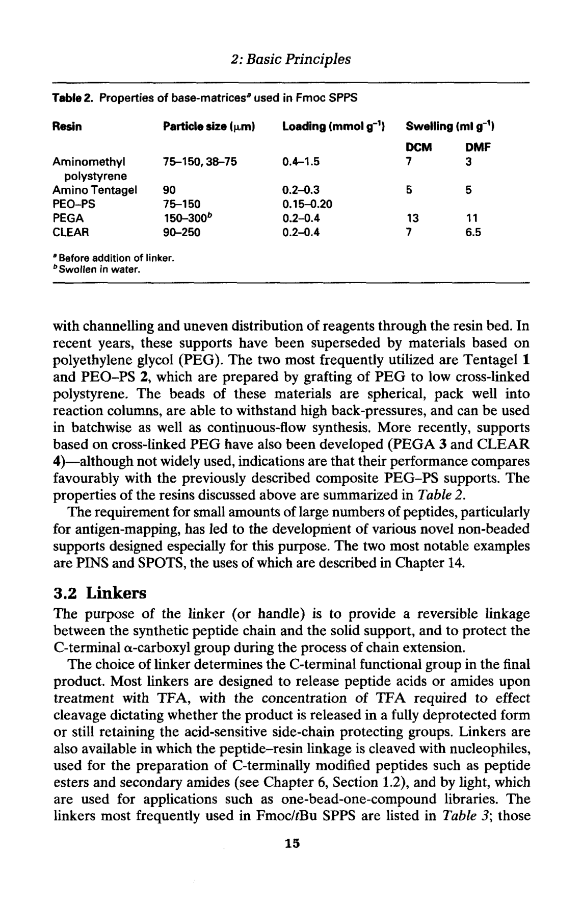
Table 2 (书页 15)：Fmoc SPPS 中使用的基质树脂的性质
表 2 的关键数据摘要：
| 树脂类型 | 粒径 (μm) | 负载 (mmol/g) | 溶胀特性 |
|---|---|---|---|
| 氨甲基聚苯乙烯 (PS) | 75–150 | 0.4–1.5 | DCM: 7 ml/g, DMF: 3 ml/g |
| TentaGel | ~90 | 0.2–0.3 | DCM/DMF: ~2.5 ml/g |
| PEGA | 50–100 | 0.2–0.7 | 水: 13 ml/g（水溶胀极好） |
| CLEAR | 50–150 | 0.3–1.0 | 多种溶剂中均匀溶胀 |
连接臂 (linker) 是连接肽链与固相载体之间的可逆连接分子。它的核心功能包括：(1) 提供肽链与固相载体之间的可逆共价连接；(2) 在合成过程中保护 C 端 α-羧基；(3) 连接臂的选择直接决定了最终产物的 C 端官能团 (free acid, amide, alcohol, etc.)。
Wang 树脂 (Wang resin / HMP resin)：产生 C 端游离酸肽 (peptide acid, -COOH)。切割条件：50% TFA / DCM。这是最常用的肽酸连接臂。第一个氨基酸通过 DIC/DMAP 或对称酸酐法负载到树脂上。
Rink Amide 树脂 (Rink amide resin)：产生 C 端酰胺肽 (peptide amide, -CONH₂)。切割条件：TFA (95% TFA)。这是最常用的肽酰胺连接臂。适用于模拟天然 C 端酰胺化肽的合成。
2-氯三苯基氯树脂 (2-Chlorotrityl chloride, 2-CTC resin)：极酸敏感连接臂，1% TFA / DCM 即可切割。可释放保留侧链保护基的肽段，适用于片段缩合 (fragment condensation / convergent synthesis)。强烈推荐用于 Cys 和 His 的合成 (避免消旋化, racemization)。第一个氨基酸通过游离氨基与树脂上的三苯甲基氯反应形成酯键，无需额外活化，因此无消旋化风险。
HMBA 树脂 (4-Hydroxymethylbenzoic acid)：亲核试剂切割 (nucleophilic cleavage)。通过不同亲核试剂 (NaOH, NH₃, hydrazine 等) 切割可获得不同 C 端修饰的肽。
Sieber 酰胺树脂 (Sieber amide resin)：产生 C 端一级酰胺 (primary amide)。酸敏感，切割条件较 Rink Amide 更温和。
HMPA / HMPB 树脂：酸敏感肽酸连接臂 (acid-sensitive peptide acid linker)。比 Wang 树脂更敏感，适用于酸敏感序列。
PAL 树脂 (Peptide amide linker)：产生 C 端酰胺肽。类似于 Rink Amide 但结构不同。
Weinreb 酰胺树脂 (Weinreb amide resin)：产生 C 端 Weinreb 酰胺 (N-methyl-N-methoxy amide)。Weinreb 酰胺可方便地转化为醛 (aldehyde) 或酮 (ketone)，适用于需要进一步 C 端衍生化的合成。
20 种常见蛋白质氨基酸中，超过一半的侧链含有反应性官能团，在肽链组装过程中必须加以保护，以防止不必要的副反应。保护基的选择需要遵循正交原则——侧链保护基必须在 Fmoc 脱保护条件 (碱) 下稳定，同时能在最终切割条件 (TFA) 下被去除。
以下保护基均可被 TFA 去除，适用于标准 Fmoc/tBu SPPS：
■ 常规保护基 (TFA 去除)
| 氨基酸 | 保护基 | 说明 |
|---|---|---|
| Asp / Glu | OtBu | 叔丁基酯 (tert-butyl ester)。酸切割去除。 |
| Ser / Thr / Tyr | tBu | 叔丁基醚 (tert-butyl ether)。 |
| Asn / Gln | Trt | 三苯甲基 (trityl)。同时防止脱水副反应。 |
| His | Trt | 三苯甲基。保护咪唑环。也可用 Bum (更有效抑制消旋)。 |
| Cys | Trt | 三苯甲基——最常用。也可用 Acm (正交保护)、StBu、Mmt。 |
| Arg | Pbf | 2,2,4,6,7-五甲基二氢苯并呋喃-5-磺酰基。优于旧式 Pmc (切割更快)。 |
| Lys | Boc | 叔丁氧羰基。 |
| Trp | Boc | 保护吲哚氮 (indole nitrogen)。防止氧化和吲哚副反应。 |
■ 正交保护基 (可选择性去除)
当需要选择性地脱保护某个侧链 (例如进行选择性修饰、环化或分支肽合成) 时，需要使用正交保护基。这些保护基在标准 TFA 切割条件下稳定，但可通过特定的化学方法去除：
Cys-Acm：Acm (acetamidomethyl)。通过 Hg²⁺ (如 Hg(OAc)₂) 或 Ag⁺ (如 AgOTf) 去除。常用于二硫键 (disulfide bond) 的正交构建。
Cys-StBu：StBu (tert-butylthio)。通过还原 (DTT, TCEP) 去除。
Cys-Mmt：Mmt (4-methyltrityl)。通过 1% TFA 去除。极酸敏感。
Lys-Alloc：Alloc (allyloxycarbonyl)。通过 Pd⁰ 催化 (如 Pd(PPh₃)₄ + PhSiH₃) 去除。
Lys-Dde：Dde (1-(4,4-dimethyl-2,6-dioxocyclohexylidene)ethyl)。通过 2% 肼 (hydrazine) / DMF 去除。
Lys-Mtt：Mtt (4-methyltrityl)。通过 1% TFA 去除。
Asp/Glu-OAll：OAll (allyl ester)。通过 Pd⁰ 催化去除。
第一个氨基酸连接到树脂上的上载程度 (loading level) 直接决定了最终产物的收率。如果上载不完全，未反应的羟基 (hydroxyl group) 或氨基 (amino group) 位点在后续的合成循环中会被偶联试剂酰化 (acylated)，产生 C 端截短副产物 (C-terminal truncated by-products)。这些副产物与目标肽只差几个残基，物理化学性质相近，使得最终产物的 HPLC 纯化变得非常困难。
因此，确保第一个残基的定量连接非常重要。常用策略包括：使用 2-3 倍过量的氨基酸、延长反应时间、使用 DMAP (4-dimethylaminopyridine) 作为催化剂等。
在将第一个氨基酸连接到羟甲基树脂 (hydroxymethyl resin，如 Wang 树脂) 上时，酯化反应常伴随消旋化 (racemization)，尤其是 His 和 Cys 这两个容易消旋的氨基酸。这是因为酯化反应中需要活化羧基，活化的羧基更容易发生 α-质子转移。
解决方案：
推荐使用三苯基树脂 (trityl resin，如 2-CTC 树脂)。在 2-CTC 树脂上，第一个氨基酸通过其游离氨基 (而不是羧基) 与树脂上的三苯甲基氯反应形成酯键，不需要活化羧基，因此完全避免了消旋化问题。这就是为什么 2-CTC 树脂特别推荐用于 Cys 和 His 的合成。
二酮哌嗪 (Diketopiperazine, DKP) 是一种环二肽 (cyclic dipeptide)。当树脂上的 C 端二肽含有 Pro (脯氨酸) 或 N-烷基氨基酸 (N-alkyl amino acid) 时，二肽的游离氨基容易攻击第二个残基与连接臂之间的酯键，发生分子内环化 (intramolecular cyclization)，形成六元环的 DKP，导致肽链从树脂上断裂。
DKP 形成导致肽链丢失和截短序列的产生，降低了最终收率。DKP 形成在 Fmoc 脱保护后 (第二个残基的 α-氨基暴露时) 尤其容易发生。
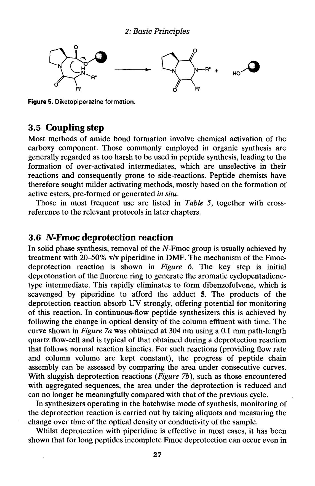
Figure 5 (书页 27)：二酮哌嗪 (DKP) 形成机理
减少 DKP 形成的策略：
使用三苯基酯连接 (trityl ester linkage，如 2-CTC 树脂)。三苯基的位阻大，使得分子内环化的空间构型难以实现，从而显著减少 DKP 形成。
缩短 Fmoc 脱保护时间——减少游离氨基暴露的时间窗口。
对于已知容易形成 DKP 的序列 (如 X-Pro 序列)，在第二个残基偶联后直接进行 Fmoc 脱保护，然后立即进行下一个偶联。
偶联 (coupling) 是 SPPS 中形成新酰胺键的关键步骤。在偶联反应中，下一个 Nα-Fmoc 保护的氨基酸的羧基必须被活化 (activated)，使其能够与树脂上肽链的游离 α-氨基发生亲核酰基取代反应 (nucleophilic acyl substitution)，形成新的肽键 (peptide bond)。
肽化学家不断寻求更温和、更高效的活化方法。在 Fmoc SPPS 中，主要的偶联方法基于活性酯 (active esters) 的形成——可以是预制活性酯 (pre-formed active esters) 或原位生成 (in situ generated)。
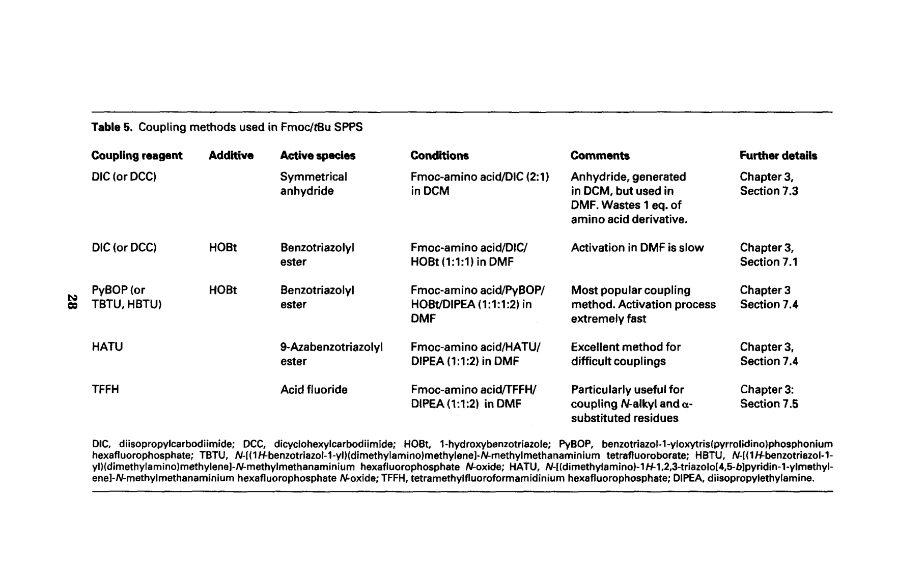
Table 5 (书页 28)：Fmoc/tBu SPPS 中常用的偶联方法（重要参考表）
■ 1. DIC/HOBt 法（最常用）
Fmoc-AA-OH : DIC : HOBt = 1 : 1 : 1 (当量比)，溶剂为 DMF。
DIC (N,N'-diisopropylcarbodiimide) 是一种碳二亚胺类活化试剂，它与氨基酸的羧基反应形成 O-acylisourea 中间体，然后被 HOBt (1-hydroxybenzotriazole) 捕获形成 HOBt 活性酯。HOBt 活性酯的稳定性适中——足够稳定以避免消旋化，但又足够活泼以与胺快速反应。HOBt 还能有效抑制消旋化 (racemization)。该方法活化极快，操作简单，是日常合成的首选方法。
■ 2. 对称酸酐法 (Symmetric anhydride method)
Fmoc-AA-OH + DIC (2:1 当量比)，溶剂为 DCM。
两分子氨基酸与一分子 DIC 反应生成对称酸酐 (symmetric anhydride)。对称酸酐是极强的酰基化试剂，偶联反应非常迅速且完全。缺点是：浪费一当量的氨基酸 (因为只有一半的氨基酸成为有效的酰基供体)，成本较高。适用于难以偶联的序列或使用廉价氨基酸时。
■ 3. 鎓盐类活化试剂：PyBOP / TBTU / HBTU
这类试剂属于膦盐 (phosphonium) 或铵盐 (aminium/uronium) 类活化试剂。它们与 Fmoc-AA-OH + HOBt 配合使用，需加入 DIPEA (Hünig's base) 作为碱。
反应机理：鎓盐试剂将氨基酸的羧基转化为 HOBt 活性酯 (或 AtOBT 活性酯)，然后与树脂上的氨基反应。
各种鎓盐的特点：
HBTU：O-(Benzotriazol-1-yl)-N,N,N',N'-tetramethyluronium hexafluorophosphate。最经典的鎓盐试剂。注意：HBTU 实际上通过形成 N-formyl 中间体活化，可能产生副产物。
TBTU：O-(Benzotriazol-1-yl)-N,N,N',N'-tetramethyluronium tetrafluoroborate。与 HBTU 类似，只是反离子不同。
PyBOP：Benzotriazol-1-yl-oxytripyrrolidinophosphonium hexafluorophosphate。膦盐类试剂，不产生有毒的 HMPA 副产物 (早期 BOP 试剂的问题)。
■ 4. HATU 法
HATU (O-(7-Azabenzotriazol-1-yl)-N,N,N',N'-tetramethyluronium hexafluorophosphate) 是 HBTU 的"氮杂"版本 (aza-analog)。
它生成 9-氮杂苯并三唑酯 (OAt ester)，比 HOBt 酯的反应活性更高，同时消旋化更少。特别适用于困难偶联 (difficult couplings)，如空间位阻大的氨基酸 (如 Aib, N-烷基氨基酸) 或聚集序列。HATU 是目前最强大的标准偶联试剂之一，但成本较高。
■ 5. TFFH 法
TFFH (Tetrafluoroborate salt of fluoro-N,N,N',N'-tetramethylformamidinium) 将氨基酸的羧基转化为酰氟 (acyl fluoride)。酰氟对水稳定但与胺反应迅速，特别适用于 N-烷基氨基酸 (N-alkyl amino acids) 之间的偶联 (这类偶联由于空间位阻，常规方法效果不佳)。
Fmoc 基团的去除是 Fmoc/tBu SPPS 中每一步循环的开始。标准条件：20–50% 哌啶 (piperidine) / DMF，室温反应 5–20 分钟。通常分两步进行：先用 20% 哌啶/DMF 处理 5 分钟，再加入新鲜 20% 哌啶/DMF 处理 10–15 分钟。
Fmoc 基团去除的化学机理 (见 Figure 6) 是一个 β-消除 (β-elimination) 过程：
哌啶 (二级胺, pKa ~11) 作为碱，夺取芴环 (fluorene ring) 上 9 位碳的酸性质子。该质子的酸性来源于相邻的两个苯环的共轭稳定作用。
质子去除后，生成环戊二烯型负离子中间体 (cyclopentadienyl-type anion)。该中间体不稳定，迅速发生 β-消除反应。
消除反应导致 C9-N 键断裂，释放出 CO₂ 和二苯并富烯 (dibenzofulvene, DBF)。DBF 是一个活泼的 Michael 受体。
溶液中的哌啶 (亲核试剂) 迅速捕获 DBF (Michael 加成)，形成稳定的哌啶-DBF 加合物 (piperidine-dibenzofulvene adduct 5)。这一步对于驱使反应完全非常重要——如果没有亲核试剂捕获 DBF，DBF 可能会与树脂上的氨基发生 Michael 加成，产生不可逆的烷基化副反应。
Fmoc 脱保护过程中释放的 DBF (或其加合物) 在 304 nm 处有特征 UV 吸收。在连续流合成中，可以通过在线 UV 检测器 (304 nm) 实时监测脱保护流出液，从而定量判断 Fmoc 去除的程度。
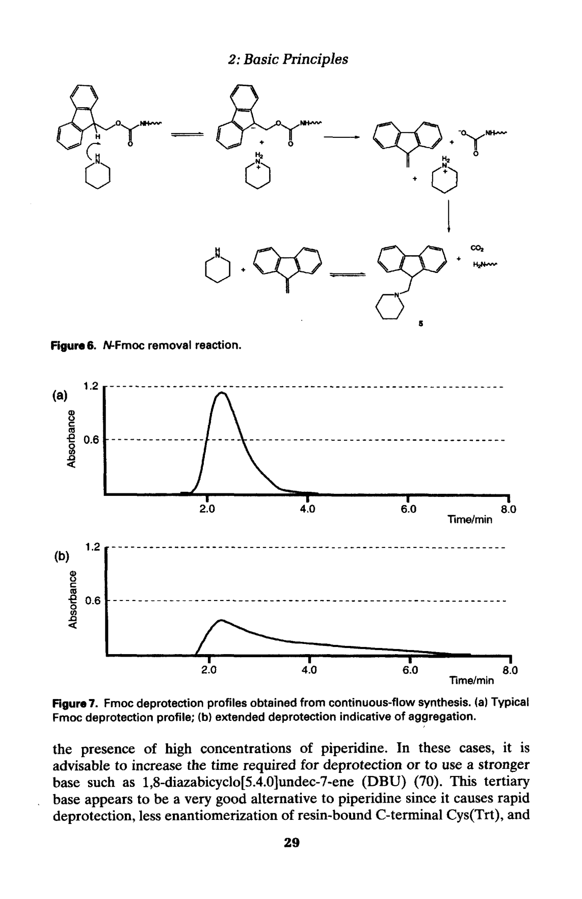
Figure 7 (书页 29)：连续流合成中 304 nm 处的 Fmoc 脱保护 UV 监测曲线
UV 峰的形状可以提供关于肽链聚集状态的重要信息：
正常脱保护：UV 峰窄而高 (sharp, tall peak)，表明 Fmoc 去除迅速、完全，肽链在树脂上处于良好溶剂化状态。
聚集序列：UV 峰宽而扁 (broad, flat peak)，表明 Fmoc 去除缓慢、不完全。这是肽链聚集导致树脂内通道被堵塞、哌啶渗透受阻的信号。宽峰的出现是一个警告，表明后续的偶联反应可能也会受到影响。
DBU (1,8-Diazabicyclo[5.4.0]undec-7-ene) 是一种非亲核的强碱 (pKa ~13.5)，可以作为哌啶的替代品用于 Fmoc 脱保护。DBU 的特点：
脱保护速度更快——DBU 比哌啶的碱性更强，能在更短时间内完全去除 Fmoc。
Cys(Trt) 消旋更少——使用 DBU 时，Cys(Trt) 的消旋化程度显著低于使用哌啶时。
UV 峰更窄——在连续流监测中，DBU 脱保护的 UV 峰更尖锐，反映更快的反应动力学。
DBU 是叔胺 (tertiary amine)，不能与 DBF 发生 Michael 加成。因此，在批式合成中使用 DBU 时，必须加入 2% 哌啶 (或其他亲核试剂) 作为清除剂 (scavenger)，以捕获生成的 DBF，防止 DBF 对树脂上氨基的烷基化。
在连续流合成中不需要加哌啶，因为 DBF 被溶剂流迅速洗走。
聚集 (aggregation) 是当前 Fmoc SPPS 失败的最常见原因。在肽链延伸过程中，生长的肽链可能与树脂基质中的其他肽链或聚合物载体之间形成强烈的非共价相互作用——主要是氢键 (hydrogen bonding) 和疏水作用 (hydrophobic interactions)。这些相互作用导致肽链形成有序的二级结构 (如 β-折叠, β-sheet) 或无序的聚集体 (disordered aggregates)，使肽链从可溶胀状态转变为不溶胀的聚集状态。
聚集一旦发生，其影响是灾难性的：
树脂突然收缩 (sudden shrinkage)——肽链聚集产生的收缩力导致树脂体积减小。
溶剂和试剂的渗透 (permeation) 大大降低——聚集的肽链堵塞了树脂内部的扩散通道。
酰化 (acylation) 或脱保护 (deprotection) 反应失败——试剂无法到达反应位点。
产生 deletion sequences (缺失序列) 和 truncated sequences (截短序列)。
聚集可从肽链的第 5 个残基开始出现。高比例 Ala (丙氨酸)、Val (缬氨酸)、Ile (异亮氨酸)、Asn (天冬酰胺)、Gln (谷氨酰胺) 的序列特别容易聚集——这些氨基酸容易形成 β-折叠结构。Val 和 Ile 由于 β-分支侧链，尤其容易引起聚集。
■ 策略 1：插入 Pro 或 N-烷基氨基酸
在序列中插入 Pro (脯氨酸) 或 N-烷基氨基酸 (如 N-Me-Ala) 可以破坏 β-折叠结构，因为它们的酰胺氮上没有氢供体 (no N-H bond)，无法参与氢键形成。有趣的是，这种破坏效果可以"远程"持续约 6 个残基，即在一个位置插入 Pro/N-烷基氨基酸，可以缓解后续 6 个残基的聚集问题。这种方法适用于目标肽本身含有 Pro 或允许引入 N-甲基化修饰的情况。
■ 策略 2：Hmb 骨架保护 (Sheppard 方法)
由 Sheppard 等人开发的 Hmb (2-hydroxy-4-methoxybenzyl) 骨架保护方法：在肽链合成过程中，选择性地在特定位置引入 N-Hmb 保护的甘氨酸 (Hmb-Gly)。Hmb 基团占据酰胺 NH 位点，阻止氢键形成，从而有效防止聚集。Hmb 基团可以在最终 TFA 切割时同时去除。(详见第 5 章)
■ 策略 3：假脯氨酸 (Pseudoproline, Mutter 方法)
由 Mutter 等人开发的假脯氨酸 (pseudoproline, ψPro) 技术：将 Ser (丝氨酸) 或 Thr (苏氨酸) 的侧链羟基与 α-氨基反应，形成噁唑烷 (oxazolidine) 环——即假脯氨酸二肽。
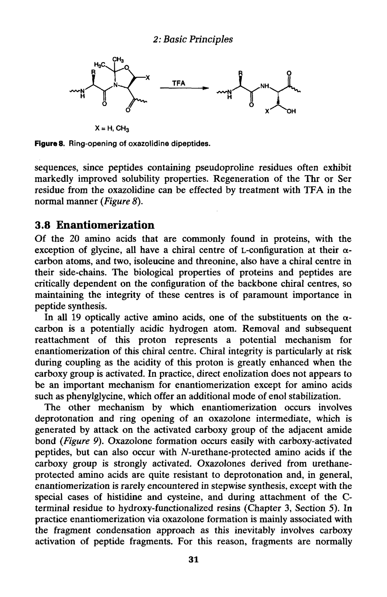
Figure 8 (书页 31)：噁唑烷二肽 (假脯氨酸) 的开环再生机理
假脯氨酸以二肽单元 (dipeptide unit) 的形式引入——如 Fmoc-Ser(ψMe,Me,Pro)-OH。使用假脯氨酸二肽可以一步延长两个残基，提高合成效率。噁唑烷环引入了类似 Pro 的结构特征 (环状结构，N 上无游离氢)，因此有效破坏 β-折叠和聚集。在最终 TFA 切割时，噁唑烷环被打开，再生为天然的 Ser 或 Thr 残基。
假脯氨酸技术是目前应对困难序列 (difficult sequences) 最有效的方法之一，特别适用于富含 Ser/Thr 的聚集序列。
在 20 种蛋白质氨基酸中，除 Gly (甘氨酸，无手性中心) 外，其余所有氨基酸都具有 L-构型的 α-手性中心 (α-stereocenter)。保持手性完整性 (chiral integrity) 对于肽的生物活性至关重要——即使单个残基发生 D-构型差向异构化 (epimerization)，也可能完全改变肽的三维结构和生物活性。
在 SPPS 中，手性完整性面临最大风险的步骤是偶联反应——因为在活化羧基形成活性酯时，α-质子的酸性大大增强，更容易被碱去除。
消旋化主要通过两种机制发生：
■ 机制 1：直接烯醇化 (Direct enolization)
碱直接去除 α-碳上的质子，生成烯醇负离子 (enolate)，质子重新加成时可能从任一面进入，导致 D/L 混合物。对大多数氨基酸而言，这种机制不重要 (苯基甘氨酸 phenylglycine 是例外)。
■ 机制 2：噁唑酮途径 (Oxazolone pathway) —— 主要机理
这是肽合成中消旋化的主要机制：
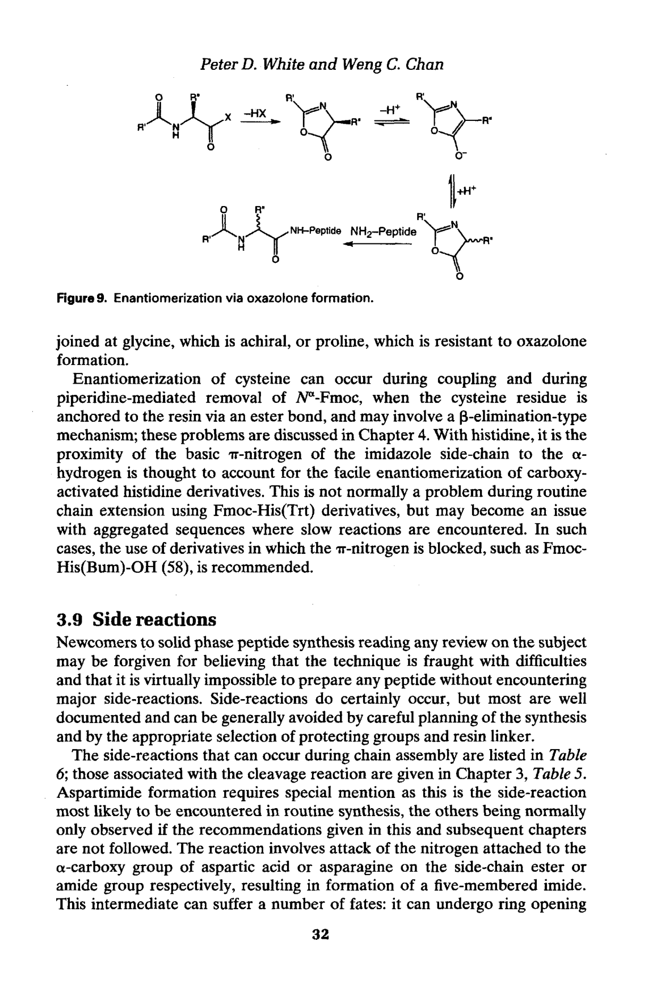
Figure 9 (书页 32)：通过噁唑酮 (oxazolone) 形成的消旋化机理
在羧基被活化后 (如形成活性酯)，相邻酰胺键 (amide bond) 的氮原子 对活化羧基的碳进行分子内亲核攻击 (intramolecular nucleophilic attack)。
这导致形成五元环的噁唑酮 (oxazolone, 也叫 azlactone)。噁唑酮的 α-质子比正常氨基酸的 α-质子更酸性，更容易被碱去除。
α-质子被去除后，生成的碳负离子/烯醇负离子在重新质子化时，可以从环的任一面加成质子。
噁唑酮被胺开环 (ring-opening) 后，可能得到 D-构型的氨基酸残基 (而非天然 L-构型)。
在实际 SPPS 中，消旋化风险按严重程度排列：
片段缩合 (Fragment condensation / convergent synthesis)：主要风险！在片段缩合中，一个已合成的肽段 (含多个残基) 的 C 端羧基被活化，与另一个肽段的 N 端氨基偶联。由于肽段的酰胺键更容易形成噁唑酮，消旋化风险大大增加。解决策略：在 Gly 或 Pro 处进行片段连接 (这两个氨基酸不易消旋化)。
His (组氨酸)：His 的咪唑环 (imidazole ring) 的 τ-N (tele-nitrogen) 可以催化 α-H 的去除，促进消旋化。解决策略：使用 Fmoc-His(Bum)-OH (Bum 保护咪唑 τ-N) 或 Fmoc-His(Trt)-OH。
Cys (半胱氨酸)：Cys 在通过酯键连接到树脂时，β-消除型机理可能导致消旋化。解决策略：使用三苯基树脂 (如 2-CTC 树脂)，避免酯键连接。
第一个残基连接到羟甲基树脂：在将第一个氨基酸上载到 Wang 等羟甲基树脂时，酯化反应需要活化羧基，可能导致消旋化。解决策略：使用三苯基树脂 (无需活化羧基) 或使用预制活性酯 (如 OPfp 酯)。
在 SPPS 的链组装过程中，各种副反应可能与正常偶联反应竞争，导致副产物的产生。了解这些副反应及其预防措施对于成功合成至关重要。
天冬酰亚胺形成是 Fmoc SPPS 中最常见、最令人头疼的副反应。
发生条件：当 Asp(OtBu) 后面紧跟某些氨基酸 (即 Asp-Xxx 序列) 时，Xxx 残基的 α-氨基 (α-amino group，在 Fmoc 被去除后暴露) 可以分子内攻击 Asp 侧链的叔丁基酯 (OtBu ester)，形成五元环的酰亚胺 (imide，即天冬酰亚胺 aspartimide)，同时释放叔丁醇。
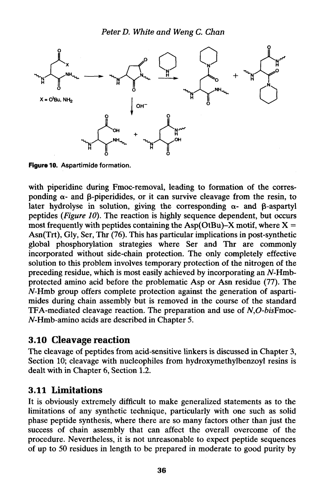
Figure 10 (书页 36)：天冬酰亚胺 (aspartimide) 形成机理
天冬酰亚胺形成后可以发生两种后续反应：
被哌啶 (piperidine, Fmoc 脱保护试剂) 开环 → 形成 α-或 β-哌啶酰亚胺 (α/β-piperidyl amide)。这导致在原本 Asp 的位置插入了哌啶基团。
被水 (水解) 开环 → 形成 α-或 β-天冬氨酰肽 (α/β-aspartyl peptide)。β-天冬氨酰肽是 iso-Asp 副产物，即天冬氨酸的侧链羧基参与了肽键形成 (α→β 重排)。
最容易发生天冬酰亚胺形成的 Asp-Xxx 序列：Xxx = Gly, Asn(Trt), Ser, Thr, Arg(Pmc/Pbf)。特别是 Asp-Gly 序列，因为 Gly 的位阻最小，最容易进行分子内环化。
预防策略：
在 Asp 前一个残基引入 N-Hmb 骨架保护——Hmb 占据酰胺 NH 位点，阻止了分子内亲核攻击，是最有效的预防方法。
使用 Fmoc-Asp(OtBu)-OH 的替代品：Fmoc-Asp(OMpe)-OH (使用更大的酯保护基，增加位阻)。
在 Fmoc 脱保护步骤中使用 DBU 替代哌啶 (减少哌啶开环产物)。
降低哌啶浓度或缩短脱保护时间。
使用添加剂如 HOBt 或 Oxyma 在脱保护步骤中。
Arg → Ornithine (鸟氨酸) 转化：如果 Arg 的侧链保护不当，保护基可能脱落导致侧链胍基被修饰或降解为鸟氨酸。预防：使用磺酰基保护基 (Pbf/Pmc)。
Arg β-内酰胺 (β-lactam) 形成：Arg 的活化过程中可能形成 β-内酰胺副产物。预防：在偶联时加入 HOBt。
Asn → Cyanoalanine (氰基丙氨酸) 形成：Asn 侧链酰胺在活化时可能脱水形成氰基 (nitrile)。预防：使用预制活性酯 (Fmoc-Asn-OPfp) 或 Fmoc-Asn(Trt)-OH (Trt 保护侧链酰胺)。
Asn 脱酰胺 (Deamidation)：Asn 侧链酰胺水解为 Asp。预防：避免长时间暴露于碱性或高温条件。
Asp-Pro 键酸切割：Asp-Pro 之间的肽键对酸特别敏感，可能在反复 TFA 处理中断裂。预防：避免长时间暴露于酸性条件。
Cys 消旋化 (Racemization)：Cys 在酯键连接到树脂时容易消旋化。预防：使用三苯基树脂 (如 2-CTC 树脂)。
Cys → 哌啶基丙氨酸 (Piperidinylalanine) 形成：DBF (来自 Fmoc 脱保护) 可能与 Cys 的侧链巯基反应，最终形成哌啶基丙氨酸。这一副反应不发生在氨基功能化树脂上。预防：使用三苯基树脂。
Glu → Pyroglutamate (焦谷氨酸) 形成：N 端 Glu 的侧链羧基可能环化攻击自身的 α-氨基，形成焦谷氨酸 (pyroGlu)。预防：缩短脱保护时间；确保 Fmoc 保护基及时去除后立即偶联。
Gly 二肽 (Gly-Gly) 形成：在上载第一个残基为 Gly 时，活化后的 Gly 可能与另一个 Gly 分子偶联形成二肽。预防：使用 OPfp 酯/DMAP 方法上载。
His 消旋化：His 的咪唑环促进 α-H 去质子，导致消旋化。预防：使用三苯基树脂；使用 Fmoc-His(Bum)-OH。
Met 氧化 (Oxidation)：Met 的硫醚侧链容易被氧化为亚砜 (sulfoxide)。预防：在惰性气氛 (N₂ 或 Ar) 下操作；避免使用氧化性试剂。
DKP 形成：已在 3.5.3 节详述。预防：使用三苯基树脂；缩短脱保护时间。
当目标肽序列的全部氨基酸残基组装完成后，需要进行最后一步：将肽链从固相载体上释放 (cleavage from resin)，同时去除所有侧链保护基 (global side-chain deprotection)。
在 Fmoc/tBu SPPS 中，这一步骤使用 TFA (三氟乙酸) 作为切割试剂。典型的切割 Cocktail 包含：
TFA (主体，通常 90–95%)——切割连接臂和去除 tBu/Trt/Pbf/Boc 等保护基。
EDT (ethanedithiol，乙二硫醇) 或 DTT (dithiothreitol)——作为亲核清除剂 (scavenger)，捕获切割过程中产生的阳离子 (如 tBu⁺, Trt⁺)，防止它们对肽链进行烷基化。
TIS (triisopropylsilane，三异丙基硅烷)——作为还原性清除剂。
Water (水)——清除 Pbf 产生的阳离子。
切割时间通常为 1–3 小时 (取决于序列中保护基的种类和数量)。切割后，肽被沉淀 (precipitation) 和洗涤——通常用冷乙醚 (cold diethyl ether)。详细的切割策略和 Cocktail 配方详见第 3 章第 10 节。
尽管 Fmoc/tBu SPPS 是目前最广泛使用的多肽合成方法，但它也有其局限性：
肽链长度限制：通过标准 Fmoc SPPS 方法，50 个残基以下的肽可以可靠地制备 (前提是不发生严重聚集)。对于更长的肽链，由于累积的不完全反应和聚集效应，产物纯度急剧下降。
聚集问题：某些"困难序列" (difficult sequences) 即使长度不长，也可能因为聚集而无法成功合成。聚集是当前 SPPS 失败的最常见原因。
特殊氨基酸序列：含有容易发生天冬酰亚胺形成的 Asp-Xxx 序列、容易聚集的疏水序列、或含有多个 Cys 需要正确配对的序列，都可能带来合成挑战。
对于超过 50 个残基的肽和蛋白质合成，需要使用化学选择性连接 (chemoselective ligation) 技术，如 Native Chemical Ligation (NCL，天然化学连接，第 11 章) 和化学选择性纯化 (chemoselective purification，第 12 章)。这些方法允许将多个较短的保护肽段通过化学选择性反应连接成长肽。
第二章系统介绍了 Fmoc/tBu SPPS 的基本原理，核心要点如下：
正交保护基策略：Fmoc/tBu 方法的核心——碱敏 Fmoc (临时) + 酸敏 tBu/Trt (永久)，通过完全不同的化学机制实现选择性去除。
树脂与连接臂：PS 树脂 (批式) 或 TentaGel/PEGA (连续流)；连接臂决定 C 端官能团——Wang (酸), Rink Amide (酰胺), 2-CTC (片段缩合)。
偶联方法：DIC/HOBt (日常首选), HATU (困难偶联), 对称酸酐 (快速但浪费)。
Fmoc 脱保护：20% 哌啶/DMF (标准) 或 DBU (更快, Cys 消旋更少)。304 nm UV 监测。
聚集：最常见失败原因。解决方案：Pro 插入, Hmb 骨架保护, 假脯氨酸。
消旋化：主要通过噁唑酮途径。高风险：片段缩合, His, Cys, 第一残基上载。
天冬酰亚胺：最常见副反应！Asp-Gly 序列尤其严重。预防：N-Hmb 保护。
长度限制：标准方法 < 50 残基。更长序列需化学选择性连接。
— 第二章完 —